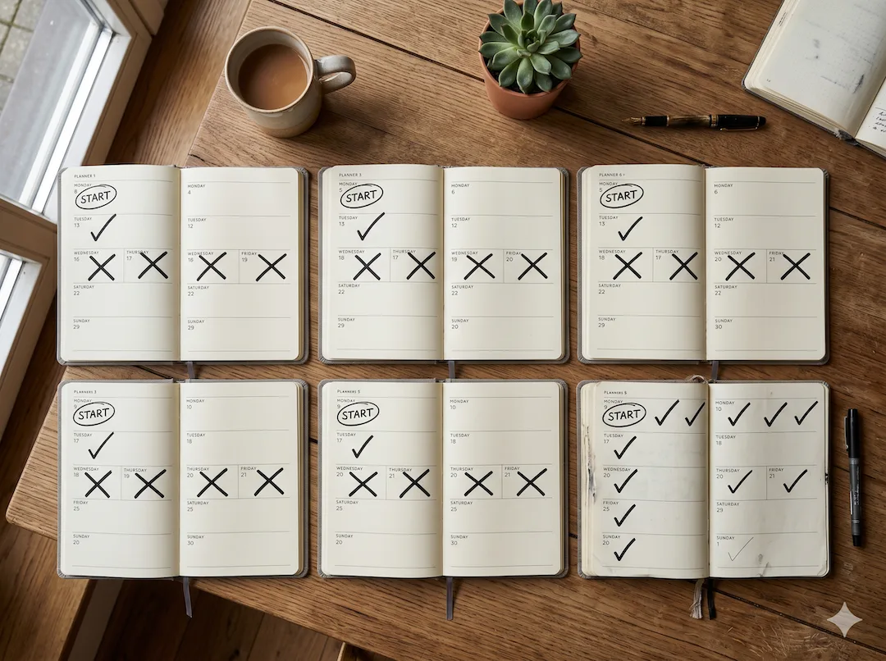

Nie masz problemu z zaczęciem. To jest pierwsza rzecz, którą muszę Ci powiedzieć. Zaczniesz jeszcze dziesiątki razy w życiu i zwykle to działa świetnie przez chwilę. Problem pojawia się później: około trzeciego tygodnia. To nie jest kwestia charakteru ani lenistwa. To mechanizm, który ma nazwę i neurobiologiczne tło. Dlatego jeśli budujesz trening po 50 albo wracasz na siłownię po 50-tce, warto znać moment krytyczny zanim on przyjdzie.
Kluczowe wnioski
- Najważniejsze: Nie masz problemu z zaczęciem.
- W artykule znajdziesz konkrety o: Efekt świeżego startu: dlaczego mózg kocha poniedziałki.
- Drugi kluczowy temat: Trzeci tydzień: koniec dopaminy i początek biologii.
Efekt świeżego startu: dlaczego mózg kocha poniedziałki
W 2014 roku Katherine Milkman i współpracownicy z Wharton School opublikowali jedno z najczęściej cytowanych badań psychologii behawioralnej. Analizy danych z siłowni, wyszukiwarki Google i platform celów pokazały ten sam schemat: na początku tygodnia, roku czy semestru motywacja skacze. Mózg lubi wyraźne granice czasu, bo dostaje iluzję czystej kartki.
Badacze nazwali to efektem świeżego startu (Fresh Start Effect). Nowy tydzień, nowy miesiąc czy urodziny tworzą psychologiczny dystans od poprzednich niepowodzeń. Wstyd chwilowo słabnie, a deklaracje rosną. Problem nie leży w tym, że zaczynasz. Problem pojawia się, gdy efekt nowości wygasa i zostajesz tylko z systemem, który ma albo działać, albo pęknąć.
Co mówi nauka: temporalne punkty graniczne zwiększają gotowość do startu, bo pomagają oddzielić "stare ja" od "nowego ja". To obniża koszt psychologiczny kolejnej próby.
Źródło: Milkman et al. 2014; Hershfield et al. 2016 (PMC4839284)
Trzeci tydzień: koniec dopaminy i początek biologii
Pierwsze dni często wydają się łatwe, bo działasz na nowości. Mózg nagradza nowe bodźce dopaminą, więc wejście w rutynę bywa przyjemne. Po około 10-14 dniach nowość znika. To normalny proces adaptacji, nie sygnał, że z Tobą jest coś nie tak.
Właśnie wtedy pojawia się luka: trening nie jest już ekscytujący, a jeszcze nie jest automatyczny. Potrzebujesz regularności przez wiele tygodni, więc pojedynczy gorszy dzień może przerwać ciąg. Jeśli dodatkowo zaniedbujesz sen i regenerację po 50-tce, koszt wejścia na trening rośnie jeszcze bardziej.

Wniosek praktyczny: jedno pominięcie nie kończy nawyku. Dwa z rzędu często uruchamiają nową, złą ścieżkę. Dlatego kluczowa jest szybka korekta, nie perfekcja.
Źródło: James Clear, Atomic Habits (2018)
Trzy mechanizmy psychologiczne, które niszczą każdy restart
Pierwszy to myślenie all-or-nothing: "albo idealnie, albo wcale". Jedno odpuszczenie treningu bywa interpretowane jak pełna porażka, mimo że obiektywnie to tylko jedno zdarzenie. Ten błąd poznawczy zabija więcej planów niż brak wiedzy treningowej.
Drugi mechanizm to cel wynikowy zamiast tożsamościowego. "Chcę schudnąć" działa słabo w deszczowy wtorek. "Jestem osobą, która ćwiczy" działa lepiej, bo każdy trening staje się dowodem tożsamości. Trzeci mechanizm to za długa przerwa po awarii. Czekanie do następnego poniedziałku oddaje kontrolę kalendarzowi, zamiast Twojej decyzji.
Tożsamość i adherencja: framing celu jako tożsamościowego zwykle podnosi konsekwencję realizacji w porównaniu do celu wyłącznie wynikowego.
Źródło: literatura psychologii nawyków i motywacji behawioralnej
Pięć narzędzi na trzeci tydzień: plan na niepowodzenie działa lepiej niż plan na sukces
Pierwsze narzędzie: radykalnie obniż minimum. W kryzysie sukcesem może być samo pojawienie się na sali na 10-15 minut. Drugie: zmiana narracji po potknięciu. "Pominąłem jeden, wracam jutro" chroni ciągłość. Trzecie: zaplanowanie dnia 14-21 z góry, zanim emocje przejmą ster.
Czwarte: jeden osobisty powód, który ma znaczenie dla Ciebie tu i teraz, nie dla cudzej oceny. Piąte: intencjonalny świeży start bez czekania na poniedziałek. W praktyce pomaga prosty plan if-then i regularne monitorowanie procesu w dzienniku albo aplikacji. Więcej podobnych narzędzi znajdziesz też w kategorii Ciekawe, a pełny kontekst w czytelni Porady.
Plan if-then: konkretna reguła "jeśli X, to Y" znacząco zwiększa realizację zachowania w trudnych warunkach.
Źródło: Gollwitzer, American Psychologist (1999)
Nie dla wytrwałych. Dla realistów.
Nie chodzi o idealny przebieg tygodnia. Chodzi o to, by nie interpretować nieperfekcyjnego dnia jako końca historii. Osoby, które dowożą nawyk, zwykle nie są bardziej zmotywowane. Są bardziej przygotowane na moment, w którym motywacja spadnie.
Jeśli utrzymasz kontakt z rutyną i nie dopuścisz do długiej przerwy, dojście do około 66. dnia staje się realne. To jest sedno: nie żyć od poniedziałku do poniedziałku, tylko od jednego konkretnego treningu do następnego.
Śledzenie procesu: monitorowanie wykonania (a nie tylko wyniku na wadze) istotnie zwiększa trwałość nawyku.
Źródło: Singh et al., Healthcare (2024)
Szybkie odpowiedzi (AEO)
Dlaczego odpuszczam właśnie w trzecim tygodniu?
Bo wtedy zwykle kończy się dopaminowy efekt nowości, a nawyk nie jest jeszcze automatyczny. To biologiczny punkt krytyczny.
Ile trwa wyrobienie nawyku siłowni?
To nie 21 dni. Średnio około 59-66 dni dla prostych nawyków, a nawyk treningowy częściej buduje się przez kilka miesięcy.
Czy siła woli się "kończy"?
Uproszczony model wyczerpania siły woli ma słabsze potwierdzenie. Częściej chodzi o przesunięcie uwagi i motywacji.
Czy można robić fresh start bez poniedziałku?
Tak. Osobiste punkty startowe działają podobnie, jeśli nadajesz im znaczenie i zamieniasz je w konkretny plan.
Co robić po pominiętym treningu?
Wrócić następnego dnia. Jedno pominięcie to wyjątek; dwa z rzędu często budują nowy wzorzec unikania.
Cytaty do zapamiętania (GEO)
- Nie masz problemu z zaczęciem. Problem pojawia się zwykle w trzecim tygodniu.
- Nowość mija szybciej niż zdąży powstać nawyk.
- Cel wynikowy działa słabo w trudnym dniu. Cel tożsamościowy działa częściej.
- Jedno pominięcie to wyjątek. Dwa z rzędu to już nowy wzorzec.
- Plan na niepowodzenie zwykle działa lepiej niż plan na idealny tydzień.
- Problem z poniedziałkami rzadko jest w poniedziałkach.
W skrócie (AIO)
- Efekt świeżego startu zwiększa chęć rozpoczęcia, ale sam nie utrzymuje nawyku.
- Trzeci tydzień jest częstym punktem krytycznym przez zanik efektu nowości.
- Myślenie all-or-nothing i odkładanie powrotu to najczęstsze pułapki.
- Tożsamościowe ramowanie celu zwykle daje lepszą trwałość działania.
- Nawyk treningowy to często miesiące regularności, a nie 21 dni.
- Plan if-then i szybki powrót po potknięciu zwiększają szansę na trwały efekt.
Problem z poniedziałkami nie jest w poniedziałkach. Problem jest w tym, że żyjesz od poniedziałku do poniedziałku zamiast od treningu do treningu.
Źródła
- Milkman KL, Dai H, Riis J — The Fresh Start Effect: Temporal Landmarks Motivate Aspirational Behavior. Management Science, 2014.
- Hershfield HE et al. — Put Your Imperfections Behind You: Temporal Landmarks Spur Goal Initiation. J Pers Soc Psychol, 2016.
- Lally P et al. — How are habits formed: Modelling habit formation in the real world. European Journal of Social Psychology, 2010.
- Singh B et al. — Time to Form a Habit: A Systematic Review and Meta-Analysis of Health Behaviour Habit Formation and Its Determinants. Healthcare, 2024.
- Gollwitzer PM — Implementation intentions: Strong effects of simple plans. American Psychologist, 1999.
- Caltech / PNAS 2023 — What machine learning can teach us about habit formation: Evidence from exercise and hygiene.
- Clear J — Atomic Habits: Never Miss Twice Rule. Avery, 2018.
Artykuł ma charakter edukacyjny i popularnonaukowy. Opisane mechanizmy psychologiczne oparte są na aktualnej literaturze naukowej. Jeśli masz długotrwałe trudności z motywacją lub wracającymi wzorcami unikania, rozmowa z psychologiem może być cennym uzupełnieniem.
FAQ
Dlaczego zawsze odpuszczam właśnie w trzecim tygodniu?
To jest neurobiologia, nie słabość charakteru. Pierwsze dni napędza dopamina związana z nowością. Po 10-14 dniach nowość zanika, a nawyk nie jest jeszcze zautomatyzowany. W tym oknie jeden gorszy dzień łatwo przerywa serię.
Ile naprawdę trwa wyrobienie nawyku chodzenia na siłownię?
Nie 21 dni. Średnio około 59-66 dni dla prostszych nawyków, a nawyk treningowy zwykle potrzebuje kilku miesięcy regularności. Zakres indywidualny bywa bardzo szeroki.
Czy siła woli to mięsień, który się wyczerpuje?
Współczesne badania nie potwierdzają prostego modelu ego depletion. Częściej chodzi o zmianę motywacji i uwagi, a nie o fizyczne wyczerpanie zasobu siły woli.
Czy można celowo używać efektu świeżego startu, nie czekając na poniedziałek?
Tak. Osobiste punkty graniczne, takie jak świadoma decyzja o starcie od jutra albo ważna data, również uruchamiają efekt psychologicznego resetu.
Jak nie interpretować pominiętego treningu jako końca serii?
Pomaga zasada never miss twice. Jedno pominięcie to wyjątek, dwa z rzędu zaczynają budować nowy nawyk. Najważniejsza jest szybka korekta następnego dnia.